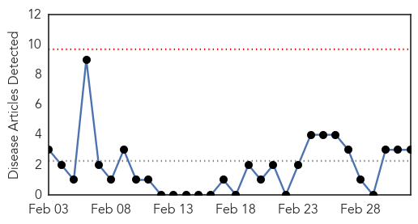

Measles
30-Day Web Trend
4 alerts, 5 warnings

30-Day Twitter Trend
0 alerts, 0 warnings

Article Locations

Article Confidences
Top Articles:
- 0.986
- Measles reaches Merced County
- 0.965
- Taking Shots, Vaccine debate spikes the Tetons – Planet Jackson Hole
- 0.964
- Illinois lawmakers call for higher immunization rate in response to measles outbreak
- 0.950
- Health officials urge measles vaccinations
- 0.919
- The Developing World – The WHO’s Private Vaccine Laboratory
- 0.901
- Vaccinations Required for Calif. Day Care Center Workers Under Bill Introduced by Senator Mendoza - SB 792
- 0.850
- Many Central Coast schools vulnerable to measles outbreaks
- 0.841
- Dana Hills High School
- 0.832
- Survey: Parents increasingly ask doctors to delay vaccines
- 0.824
- 70% of Americans Think Unvaccinated Children Shouldn't Go to School: Poll
- 0.820
- Protect yourself, others by getting vaccinated · The Badger Herald
- 0.764
- Vaccines are safe, effective and life-saving for everyone
- 0.747
- Measles outbreaks lead to public health outreach
- 0.737
- DHEC: No Measles cases in SC since at least 1999 - Live5News.com
- 0.716
- All clear on Atlanta Measles case
- 0.705
- Venezuela imposes visa requirement for U.S. tourists
- 0.620
- A Parent’s Dilemma: To Vaccinate or Not to Vaccinate
- 0.617
- Archives > News > Local leaders, doctors call for vaccinations after measles outbreak
- 0.615
- Most doctors warn against postponing children's shots
- 0.612
- Big Pharma’s Mass Vaccination Agenda
- 0.606
- U.S. Health Officials Perplexed By Vaccination Skeptics
- 0.592
- Measles outbreaks turn focus to vaccinations
- 0.557
- California lawmaker pushes child care worker vaccinations
- 0.557
- California lawmaker pushes child care worker vaccinations
- 0.550
- California lawmaker pushes child care worker vaccinations
- 0.533
- 'We're all kind of frustrated' by parents who won't vaccinate kids
- 0.533
- 'We're all kind of frustrated' by parents who won't vaccinate kids
- 0.509
- California Lawmaker Wants All Day Care Workers To Be Vaccinated « CBS Sacramento
Top Tweets:
-
No tweets found for Mar 04, 2015
Chikungunya
30-Day Web Trend
0 alerts, 0 warnings

30-Day Twitter Trend
1 alerts, 0 warnings

Article Locations
Article Confidences
Top Articles:
Top Tweets:
-
No tweets found for Mar 04, 2015